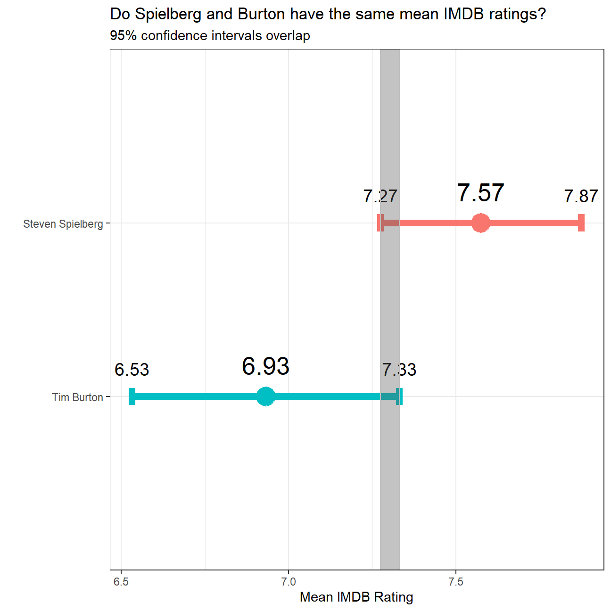
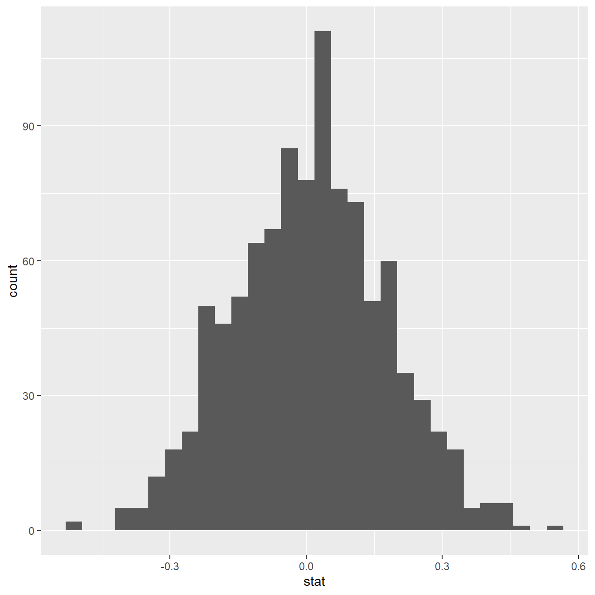
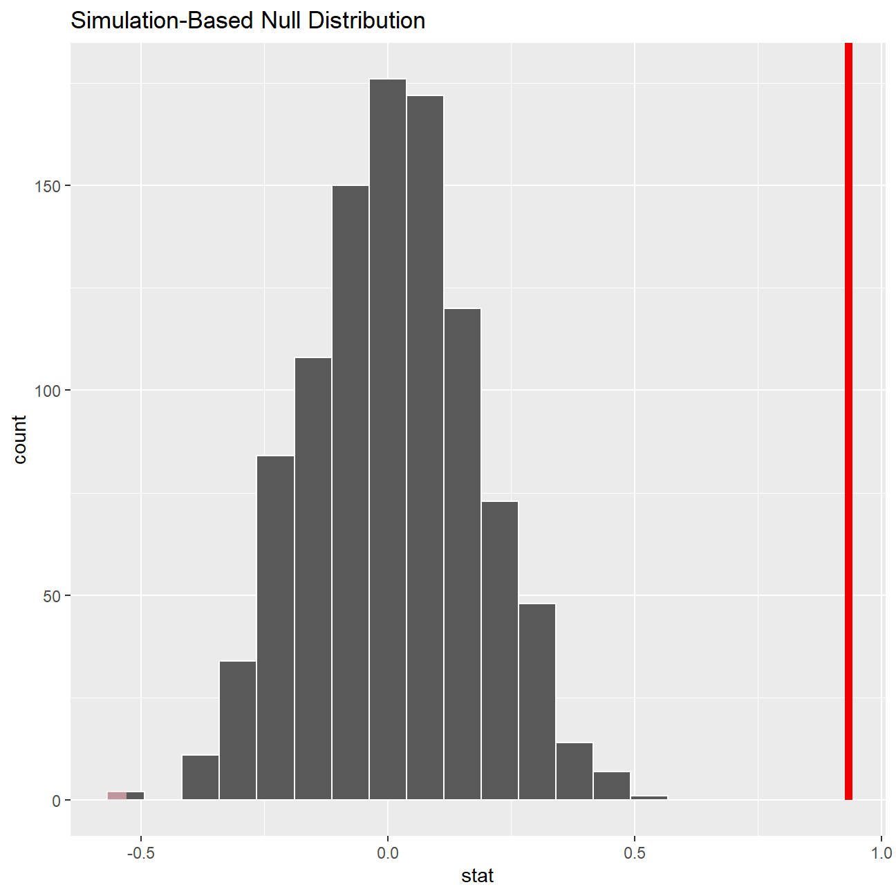

title = “IMDB Ratings: Does the director play a role?”
author = “Hugo Huere Alvarado”
date = “2020-10-22”
output:
html_document:
theme: flatly
highlight: zenburn
number_sections: yes
toc: yes
toc_float: yes
code_folding: show
IMDB ratings: Differences between directors
Recall the IMBD ratings data. I would like you to explore whether the mean IMDB rating for Steven Spielberg and Tim Burton are the same or not. I have already calculated the confidence intervals for the mean ratings of these two directors and as you can see they overlap.

First, I would like you to reproduce this graph. You may find geom_errorbar() and geom_rect() useful.
In addition, you will run a hypothesis test. You should use both the t.test command and the infer package to simulate from a null distribution, where you assume zero difference between the two.
Before anything, write down the null and alternative hypotheses, as well as the resulting test statistic and the associated t-stat or p-value. At the end of the day, what do you conclude?
You can load the data and examine its structure
movies <- read_csv(here::here("data", "movies.csv"))
glimpse(movies)
## Rows: 2,961
## Columns: 11
## $ title <chr> "Avatar", "Titanic", "Jurassic World", "The Ave...
## $ genre <chr> "Action", "Drama", "Action", "Action", "Action"...
## $ director <chr> "James Cameron", "James Cameron", "Colin Trevor...
## $ year <dbl> 2009, 1997, 2015, 2012, 2008, 1999, 1977, 2015,...
## $ duration <dbl> 178, 194, 124, 173, 152, 136, 125, 141, 164, 93...
## $ gross <dbl> 7.61e+08, 6.59e+08, 6.52e+08, 6.23e+08, 5.33e+0...
## $ budget <dbl> 2.37e+08, 2.00e+08, 1.50e+08, 2.20e+08, 1.85e+0...
## $ cast_facebook_likes <dbl> 4834, 45223, 8458, 87697, 57802, 37723, 13485, ...
## $ votes <dbl> 886204, 793059, 418214, 995415, 1676169, 534658...
## $ reviews <dbl> 3777, 2843, 1934, 2425, 5312, 3917, 1752, 1752,...
## $ rating <dbl> 7.9, 7.7, 7.0, 8.1, 9.0, 6.5, 8.7, 7.5, 8.5, 7....
Your R code and analysis should go here. If you want to insert a blank chunk of R code you can just hit Ctrl/Cmd+Alt+I
## Reproducing the graph
movies_v1 <- movies %>% filter(director == "Steven Spielberg" | director == "Tim Burton") %>% select(director | rating)
movies_v2 <- movies_v1 %>%
group_by(director) %>%
summarise(mean_rating = mean(rating, na.rm=TRUE),
sd_rating = sd(rating, na.rm = TRUE),
count = n(),
se_rating = sd_rating/sqrt(count),
t_critical = qt(0.975, count-1),
margin_of_error = t_critical * se_rating,
lower = mean_rating - t_critical * se_rating,
upper = mean_rating + t_critical * se_rating
)
p <- ggplot(movies_v2, aes(mean_rating, reorder(director, mean_rating), colour = director)) +
labs(title = "Do Spielberg and Burton have the same mean IMDB ratings?", subtitle = "95% confidence intervals overlap", x= "Mean IMDB Rating", y = "") +
theme_bw() + theme(legend.position = "none") +
geom_point(size = 7) +
geom_text(aes(label = round(mean_rating, 2)), vjust = -1.2, size = 7, colour = "black") +
geom_text(aes(x = upper, label = round(upper, 2)), vjust = -1.6, size = 5, colour = "black") +
geom_text(aes(x = lower, label = round(lower, 2)), vjust = -1.6, size = 5, colour = "black") +
geom_errorbar(movies_v2, mapping = aes(x=mean_rating, xmin=upper, xmax=lower, y = director), width = 0.1, size = 2.5) +
geom_rect(aes(xmin = lower[1], xmax = upper[2], ymin = 0, ymax = 3), colour = "grey", alpha = 0.2)
p

## Hypothesis test with formula
movies <- movies %>%
mutate(spielberg_burton = movies$director %in% c("Steven Spielberg", "Tim Burton"))
movies %>% filter(!is.na(spielberg_burton)) %>%
group_by(spielberg_burton) %>%
summarise(count = n()) %>%
mutate(prop= count/sum(count))
## # A tibble: 2 x 3
## spielberg_burton count prop
## <lgl> <int> <dbl>
## 1 FALSE 2922 0.987
## 2 TRUE 39 0.0132
t.test(rating ~ spielberg_burton, data = movies)
##
## Welch Two Sample t-test
##
## data: rating by spielberg_burton
## t = -7, df = 40, p-value = 5e-09
## alternative hypothesis: true difference in means is not equal to 0
## 95 percent confidence interval:
## -1.188 -0.679
## sample estimates:
## mean in group FALSE mean in group TRUE
## 6.38 7.31
## Hypothesis test with infer
obs_diff <- movies %>%
specify(rating ~ spielberg_burton) %>%
calculate(stat = "diff in means", order = c(TRUE, FALSE))
obs_diff
## # A tibble: 1 x 1
## stat
## <dbl>
## 1 0.933
null_dist <- movies %>%
specify(rating ~ spielberg_burton) %>%
hypothesize(null = "independence") %>%
generate(reps = 1000, type = "permute") %>%
calculate(stat = "diff in means", order = c(TRUE, FALSE))
null_dist
## # A tibble: 1,000 x 2
## replicate stat
## <int> <dbl>
## 1 1 0.344
## 2 2 0.0161
## 3 3 0.0915
## 4 4 0.224
## 5 5 0.0837
## 6 6 -0.129
## 7 7 -0.145
## 8 8 -0.116
## 9 9 0.169
## 10 10 -0.207
## # ... with 990 more rows
ggplot(data = null_dist, aes(x = stat)) +
geom_histogram()

null_dist %>% visualize() +
shade_p_value(obs_stat = obs_diff, direction = "two-sided")

null_dist %>%
get_p_value(obs_stat = obs_diff, direction = "two_sided")
## # A tibble: 1 x 1
## p_value
## <dbl>
## 1 0